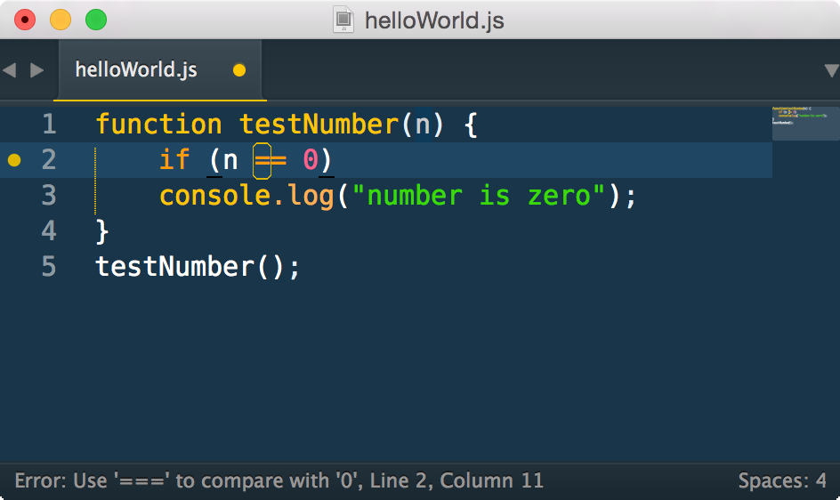

Javascript Linters
What's a 'linter'?
In 1979, at Bell Labs, Stephen C. Johnson wrote a source code analysis tool for the C langauge called lint. It looked through the source files and flagged suspicious looking bits of code that were likely to be errors. Supposedly named lint because these bits of code were much like the unwanted bits of fluff you might find on your sweater. Nowadays the terms 'lint' and 'linter' are generic terms for programs that run this sort of analysis on source code.
Why Use a Linter?
There are many benefits to checking your code with a linter.
Spot subtle coding issues.
Linters will alert you to weird code and hard-to-spot mistakes that won't necessarily cause your program to crash, but can be a sign of subtle errors in your problem logic.
If you create a variable and then never use it, a linter will warn you. If you try to declare the same variable name twice in the same scope, a linter will warn you. Here's a more detailed example. If you have the following code:
function testNumber(n) {
if (n == 0)
console.log("number is zero");
}
testNumber();
A linter will warn you:
In this case, it looks like you're trying to compare a value to see if it's 0. And when you use == to compare here, your comparison will also return true for other falsy values like "" or undefined, which may not be what you intended. So, the linter recommends you always use === to check if values equal 0. Catching things like this early can prevent hard-to-find bugs later.
Spot obvious syntax errors.
Linters will also catch a lot of obvious syntax errors for you before you even try to run your code. This too will save you time debugging.Enforce common coding conventions within a team.
If your project has a linter configuration included with its source, it can help keep all your developers or contributors on the same page as far as coding style. When all the code in your codebase plays by the same rules it's much easier to read and more straightforward to work with.
JSLint
JSLint is a tool written by Douglas Crockford. You can try it online at jslint.com. It scans through your Javascript and will print out a list of dangerous code and style problems it finds with your code.
For example:
'use strict';
function helloWorld (greeting) {
var hi = "Hello world!";
console.log(hi)
}
helloWorld();will result in:
line 2 column 20, Unexpected space between 'helloWorld' and '('.
function helloWorld (greeting) {
line 2 column 21, Unused 'greeting'.
function helloWorld (greeting) {
line 4 column 19, Expected ';' and instead saw '}'.
console.log(hi)
Douglas Crockford is author of Javascript: the Good Parts, has given some great talks on Javascript, and in general spends a lot of time thinking, writing, and talking about Javascript. He has very strong opinions on what good Javascript code should look like, and as a result so does JSLint. The official instructions include the warning "JSLint will hurt your feelings." Some of the warnings it gives can be difficult to understand, especially when you are just beginning. Sometimes these rules can seem dogmatic, difficult to adhere to, and arbitrary. Arbitrary they are not. Crockford has thought very carefully on these issues and often explains his reasoning in blog posts and lectures. Even when you don't agree, it's always interesting and informative to learn the reasoning behind Crockford's decisions with JSLint.
JSHint
As knowledgable as he may be, there's still plenty of room for legitimate disagreement with Crockford. JSHint is a fork of JSLint by Anton Kovalyov. One of the problems many people have with JSLint is that there are very few configuration options for rules you disagree with. JSHint was designed with flags and config options for nearly every rule. It also has more lenient defaults than JSLint. You can set it up to help you enforce your own team's specific coding conventions. Great for when you have your own strong opinions on what Javascript should look like, or when you think Crockford's opinions are too strong and would prefer a more community concensus based approach.
ESLint
Another notable Javascript linter is ESLint, created by Nicholas C. Zakas. The main advantage of ESLint is that not only are are rules configurable, but you can actually write your own custom linting rules as plugins. And the default bundled rules are written in the same format as any other plugin. Great when you have very specific needs for enforcing your team's code style.
SublimeLinter
Pasting your code into a website is fine for one-off code checks, but what if you want to do it more often? What if you want to keep track of how your code looks all the time?
SublimeLinter is a Sublime Text 3 plugin that can run a wide variety of linters including JSLint, JSHint, or ESLint on your code and display the results instantly in your editor.
You should really read the docs and configure your linter to meet your specific needs but these basic steps should get you started.
- Install SublimeLinter.
- Install your preferred javascript linter plugin. (There are also lots of plugins available for different langauges.)
Lint Tips
- Remember, linter warnings are suggestions, not laws. If you know what you're doing feel free to ignore or disable them. But at least try to understand why the linter rule exists.
- A lot of the errors can be hard to understand. JSLint Error Explanations is a great site which explains what many common errors mean for JSLint, JSHint, and ESLint.
- If you choose JSLint as your linter, first of all you're very brave. Secondly, you can often find reasoning for its suggestions (and many heated debates) by typing,
Crockford [linter-warning-youre-dealing-with]into Google.
Have fun picking those bits of unwanted fluff out of your programs!
posted on August 30, 2015